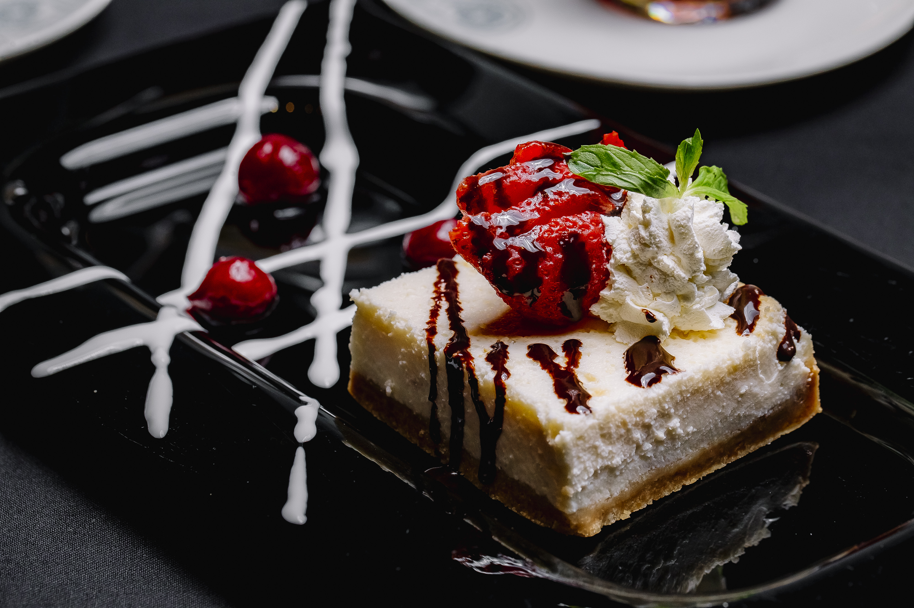
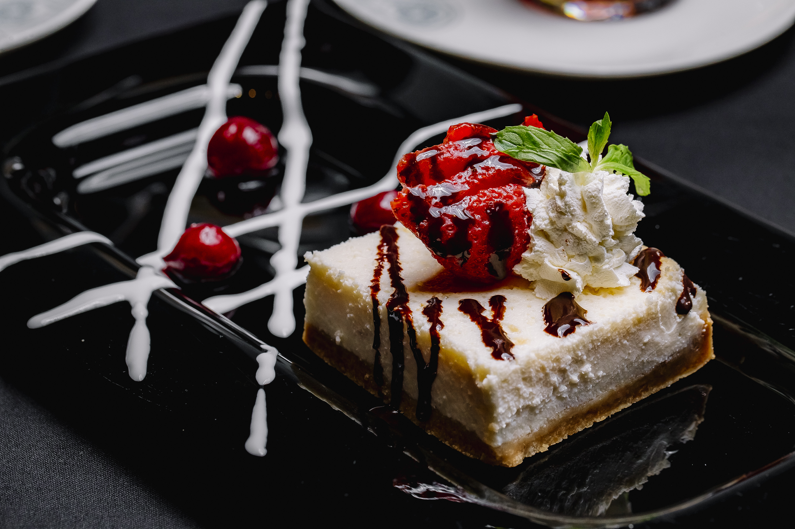

👩🍳 About the Project
Yummy Yatra is a personal food blogging platform created as a web development project. Our goal is to bring food enthusiasts together through interactive recipes, blogs, and visuals.
The project is developed by Anshika Sharma as way to blend creativity with code.
🔥 Explore What's Inside
- 🍳 Breakfast to Dinner Recipes – All meals covered!
- 📖 Food Blogs & ExperiencesFrom your kitchen to the world
- 📸 Food PhotographyEye-catching images to inspire cooking.
- 👤 User ProfilesCreate, post, and follow others.
🍕 Trending Dishes
 



💬 What Our Users Say
“Yummy Yatra helped me discover easy recipes during my hostel days.The best food blog ever!”
— Riya Sinha, Student
“As a home chef, this platform gave me visibility and a community to share my food love.”
— Aman Verma, Home Chef